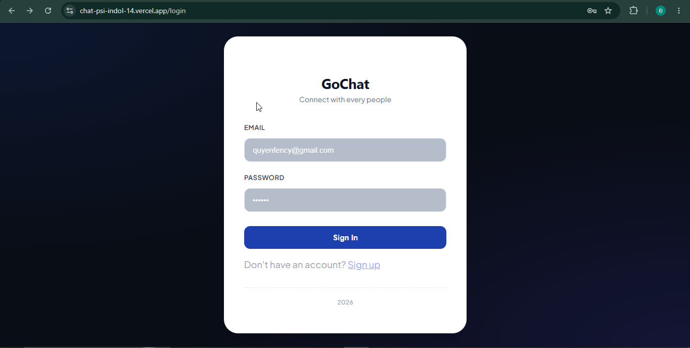
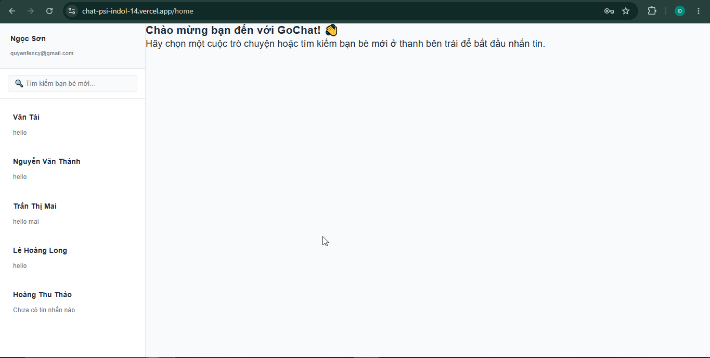
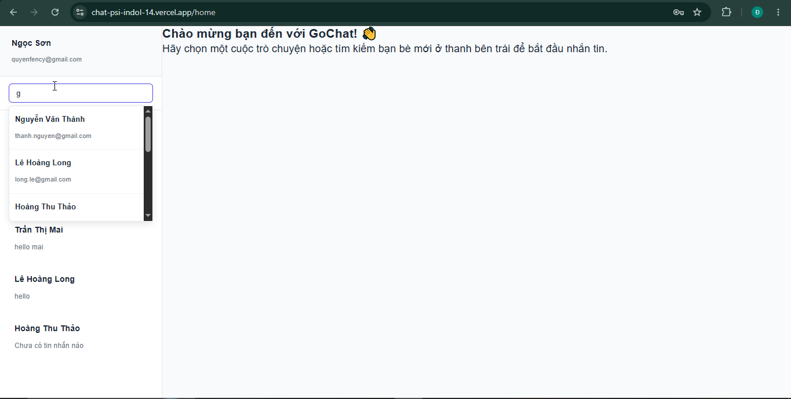

📸 View Chat Room

A full-stack web application designed for instant messaging and real-time collaboration.




Core network configurations driving the internal real-time engine:
| Method | Endpoint | Access | Description |
|---|---|---|---|
| POST | /login |
Public | Processes login claims and issues HttpOnly session authentication. |
| POST | /register |
Public | Registers new accounts and triggers initial validation tokens. |
| POST | /verify-otp |
Public | Validates 6-digit email tokens to activate user accounts. |
| GET | /user-profile |
Private | Fetches information details for the currently logged-in account. |
| GET | /my-conversations |
Private | Loads user conversation cards with last-message preview optimization. |
| GET | /chat-history |
Private | Loads historical legacy messages for selected chat rooms. |
| POST | /start-conversation |
Private | Initializes a new persistent chat node between two distinct users. |
http://localhost:8080/ws-chat (Supports fallback via SockJS)/topic/room/{conversationId} (Client listens here for incoming texts)/app/chat/{conversationId} (Client sends payloads to this target)